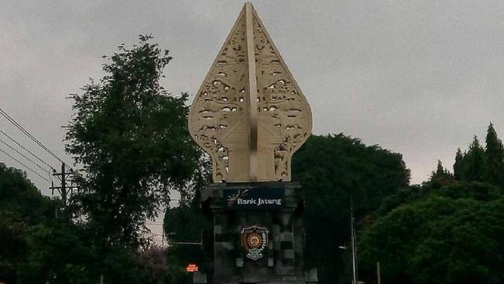

Sejarah Kota Purworejo
Kota Purworejo, yang terletak di Jawa Tengah, memiliki sejarah yang panjang dan kaya. Kota ini didirikan pada abad ke-9, berawal dari wilayah yang dikenal dengan nama "Purworejo" yang artinya "awal yang makmur". Pada masa kerajaan Mataram, Purworejo menjadi bagian penting dari jaringan perdagangan di Pulau Jawa.
Pada zaman kolonial Belanda, Purworejo berkembang menjadi pusat administrasi dan perdagangan yang strategis. Berbagai bangunan bersejarah dapat ditemukan di sini, seperti Masjid Agung Purworejo, yang menjadi simbol kekuatan Islam di kota ini.
Pada masa kemerdekaan Indonesia, Purworejo memiliki peran penting dalam perlawanan terhadap penjajahan. Salah satu peristiwa besar adalah pertempuran antara tentara Indonesia dan Belanda yang terjadi di sekitar Purworejo, yang turut memperkuat semangat kemerdekaan Indonesia.
Hingga saat ini, Purworejo tetap mempertahankan warisan sejarahnya dan menjadi kota yang menarik untuk dikunjungi bagi para wisatawan yang ingin mempelajari lebih dalam mengenai sejarah dan budaya Jawa Tengah.